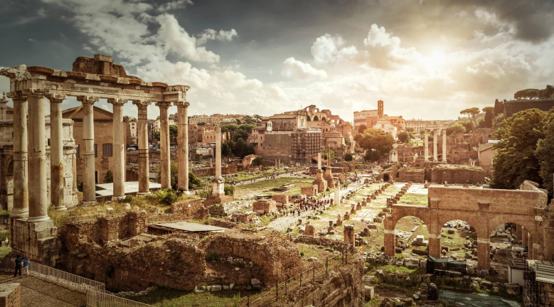

HISTORIA
Entenda o Passado, Compreenda o Futuro
História é essencial porque nos ajuda a entender o desenvolvimento das sociedades e a origem das estruturas atuais. Ela promove o pensamento crítico, ao ensinar a analisar eventos e considerar diferentes perspectivas. Além disso, fortalece a identidade cultural e o senso de pertencimento, ensinando a valorizar as conquistas e lutas de nossos antepassados.
GUERRAS
Aprenda com a Guerra, Preserve a Paz.
As guerras marcaram profundamente a história, moldando civilizações, derrubando impérios e redefinindo fronteiras. Desde os conflitos antigos, como as Guerras Médicas e as Cruzadas, até os eventos modernos, como as Guerras Mundiais, os embates revelaram disputas por poder, território e ideologias. A Primeira Guerra Mundial levou ao colapso de impérios e mudou a ordem global, enquanto a Segunda Guerra Mundial trouxe destruição em massa, o Holocausto e o início da Guerra Fria. Apesar de impulsionarem avanços tecnológicos, os conflitos deixaram um legado de sofrimento, reforçando a importância de aprender com o passado para construir um futuro mais pacífico.

REVOLUÇÕES
Estude as Revoluções, Inspire Mudanças.

As revoluções marcaram grandes mudanças sociais, políticas e econômicas ao longo da história. A Revolução Americana (1776) trouxe princípios democráticos, enquanto a Revolução Francesa (1789) derrubou a monarquia e espalhou ideias de igualdade. A Revolução Industrial transformou economias e a vida cotidiana, impulsionando o progresso tecnológico. Esses movimentos romperam estruturas antigas e mostraram a força das mudanças coletivas na busca por justiça e inovação.
IMPÉRIOS
Explore os Impérios, Decifre a História.
Os impérios foram grandes estruturas políticas e territoriais que marcaram a história com expansões, conquistas e intercâmbios culturais. O Império Romano, por exemplo, deixou um legado duradouro no direito, na arquitetura e na administração. O Império Persa destacou-se pela gestão eficiente e pela tolerância cultural, enquanto os Impérios da China, como os Han e Tang, foram pioneiros em avanços tecnológicos e comerciais, incluindo a Rota da Seda. Na era moderna, impérios coloniais europeus, como o Britânico e o Espanhol, dominaram vastas regiões do mundo, moldando sociedades por meio da exploração, do comércio e da imposição cultural. Embora muitas vezes marcados por conflitos e desigualdades, os impérios também impulsionaram a troca de ideias e inovações que influenciam o mundo até hoje.
